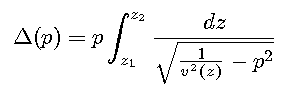
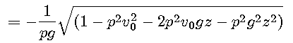

This solution is used if g=0 to avoid the then unneccessary complexity of the solution for media with linear velocity laws.
Ray paths are computed for a horizontally layered isotropic 1D medium in cartesian coordinates.
The horizontal distance Δ covered by the ray is computed as function of the depth range and the ray
parameter according to the equation (Sawarenski & Kirnos, 1960)

where
This integral has to be evaluated layer by layer, with z1 at the layer top and z2 at the layer bottom or the ray's turning point (vertex).
For a constant velocity (g=0) the solution of the integral is
This solution is used if g=0 to avoid the then unneccessary complexity of the solution
for media with linear velocity laws.
For a linear velocity law, the expression in
the integral may be rewritten as


Then indefinite integration gives


and finally

The desired epicentral distance is then computed numerically as difference of two such terms for z=z1 and z=z2, respectively, and with the parameters v0, and g of the actual velocity law.